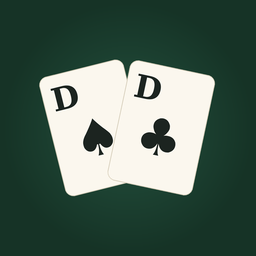

Doppelkopf
Doko gegen drei Computergegner · von Quiet Owl Studio
Hilfe
Nach welchen Regeln wird gespielt? Nach der DDV-Turnierordnung: Re (Kreuz-Damen) braucht 121 Augen, die zweite Dulle sticht die erste (außer im letzten Stich), Hochzeit und alle üblichen Soli. Im Menü kannst du ohne Neunen spielen und die Sonderpunkte Doppelkopf, Fuchs und Karlchen einzeln abschalten.
Wann kann ich Re oder Kontra ansagen? Bis vor deiner zweiten Karte, über den Knopf über deinem Blatt.
Tipps. Der Knopf „Tipp“ zeigt die Karte, die ein guter Spieler jetzt legen würde. Drei Tipps pro Tag sind gratis, weitere gibt es nach einem kurzen Video.
Wo ist meine Liste? Unter „Block“ stehen alle Spiele mit Punkten, wie auf dem Zettel am Stammtisch.
Kontakt: doppelkopf@quietowl.app. Wir antworten innerhalb von zwei Werktagen.
Datenschutzerklärung
Stand: 29. Oktober 2026
Doppelkopf braucht kein Konto und fragt weder nach Namen noch nach E-Mail-Adresse. Spielstand, Block, Statistik und Einstellungen werden nur auf deinem Gerät gespeichert.
Werbung. Die kostenlose App zeigt Werbung von Google AdMob, nur zwischen zwei Spielen und als freiwilliges Video für einen Tipp, nie während des Spiels. Google kann dabei die Werbe-ID deines Geräts (nur wenn du das Tracking erlaubst), deinen ungefähren Standort anhand der IP-Adresse sowie Informationen über angezeigte Anzeigen verarbeiten. In der EU, im Vereinigten Königreich und in einigen US-Bundesstaaten fragen wir vorher nach deiner Einwilligung; du kannst sie im Menü unter „Werbe-Einwilligung ändern“ jederzeit anpassen. Mehr bei Google: Wie Google Daten aus Apps verwendet.
Kinder. Die App richtet sich nicht an Kinder unter 13 Jahren.
Daten löschen. Lösche die App, dann sind alle gespeicherten Daten entfernt. Die Werbe-ID setzt du unter iPhone-Einstellungen › Datenschutz & Sicherheit › Tracking zurück.
Änderungen. Wenn sich diese Erklärung ändert, aktualisieren wir diese Seite und das Datum oben.
Kontakt: doppelkopf@quietowl.app